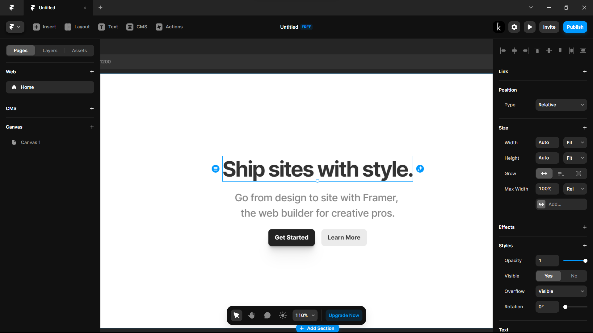

The Popular NCTs for Web Development
#Framer
#Webflow
#NCT
Introduction
When it comes to designing websites, two popular platforms used by designers and developers are Framer and Webflow. Choosing the right no-code website builder is crucial since it will have a significant impact on your workflow and the overall success of your project.
Framer
Framer is a powerful design tool that offers advanced capabilities for professional designers. The tool provides vector editing, animation tools, and a built-in code editor for more custom design options. One of the standout features of Framer is its usability testing feature that allows designers to receive real user feedback on their designs. This feature lets designers iterate their designs and enhance their final product. Some key features of Framer include:
- Advanced capabilities for creating complex animations and interactions.
- Vector editing and built-in code editor for custom design options.
- Usability testing feature for receiving real user feedback on designs.
Webflow
On the other hand, Webflow is a drag-and-drop website design and development tool that enables users to create responsive websites from scratch. Webflow is an ideal choice for designers looking to create static websites, simple landing pages, and e-commerce stores. One key feature of Webflow is its CMS (content management system) feature that allows users to easily manage website content. Furthermore, Webflow is SEO-friendly, enabling you to optimize your website content for improved search engine rankings. Some key features of Webflow include:
- Drag-and-drop website design and development tool for creating responsive websites.
- Content management system (CMS) for easy website content management.
- SEO-friendly for optimizing website content for improved search engine rankings.
Comparison
Although both Framer and Webflow have their unique strengths, there are some key differences between the two tools that you should consider when choosing which one to use for your project. Here’s a comparison of some of their most significant differences:
- Feature set: Framer has a more advanced feature set, offering powerful tools for creating complex animations and interactions. In contrast, Webflow is a simpler tool that is more focused on website design and development, offering a CMS feature and SEO-friendly capabilities.
- Learning curve: Framer has a steeper learning curve because of its advanced feature set and the need to use code. On the other hand, Webflow’s drag-and-drop interface is user-friendly, making it easier to learn for beginners.
- Pricing: Framer has a higher price point, with plans starting at $15/month compared to Webflow’s plans starting at $12/month. Furthermore, Framer’s free trial only lasts for 14 days, while Webflow offers a free plan with limited features and a paid plan with a longer free trial.
- Target audience: Framer is more suitable for professional designers and design teams, while Webflow is ideal for freelancers, small businesses, and startups.
Conclusion
When it comes to Framer vs Webflow, the choice boils down to your project requirements. If you’re looking to create rich, interactive designs for desktop or mobile apps, Framer might be a more suitable choice. However, if you’re designing for the web, Webflow could be the better choice since it’s optimized for website creation. In conclusion, both Framer and Webflow have their unique strengths, providing designers with a range of capabilities to execute their projects. It’s important to choose the right tool that aligns with your specific design requirements. Fortunately, both tools offer free trials, so you can easily test them to find out which one is the best fit for you.